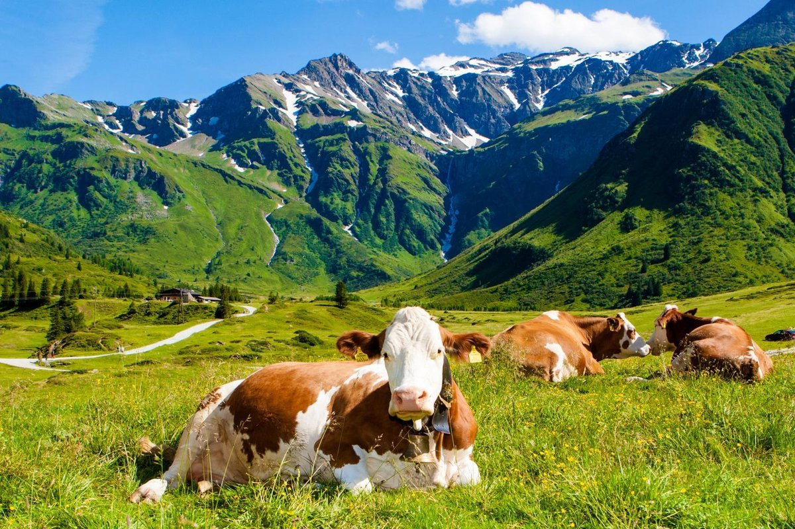
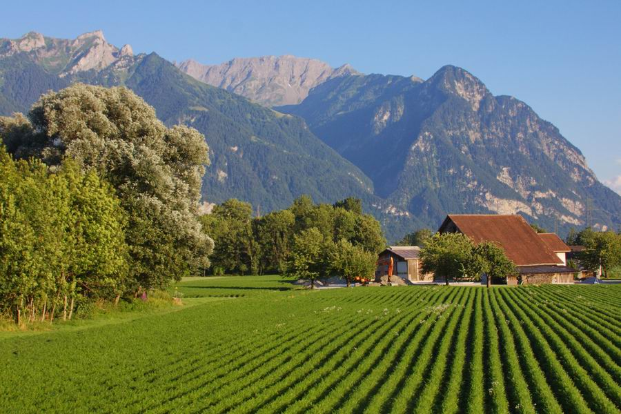
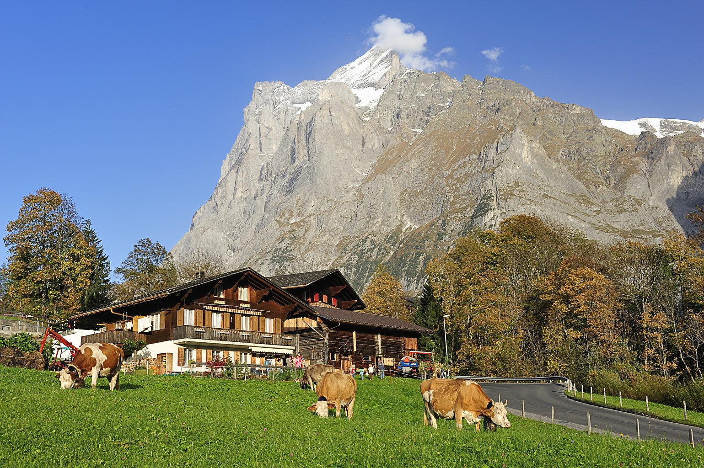
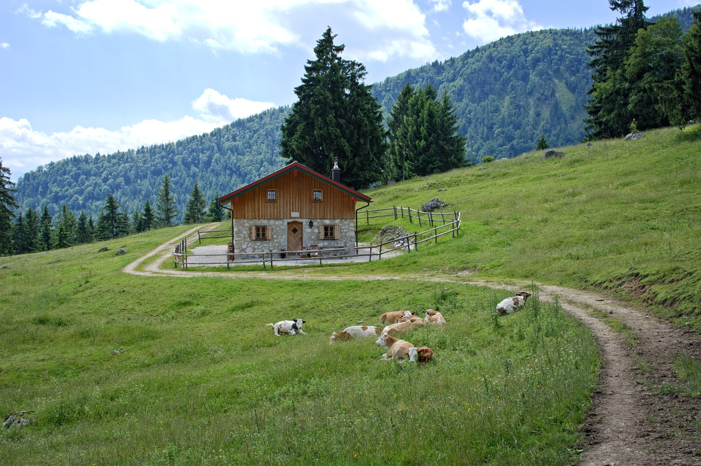

|  | Зоотехник, эксперт по составлению сбалансированного полноценного рациона оказывает услуги по нормированному кормлению/питанию животных. Специалист с опытом работы, имеет высшее зоотехническое образование, аспирантура. Составление рациона для отдельного питомца по заявке "розничного" заказчика-физического лица - 300р. Разработка рационов для хозяйства на основании договора между нашим хозяйством и вашим - договорные условия, уточнять по телефону. Осуществляет выезд на место при необходимости. Работает с родословными, отбирает животных на племя и подбор пар на основе данных; проводит учёт продуктивности животных; выполняет определение режима санитарно-профилактических, зоогигиенических норм содержания животных (температура, влажность воздуха, газообмен, пр.). Ваши действия - НЕСТРОГИЙ, ПРИБЛИЗИТЕЛЬНЫЙ ПОРЯДОК (физическое лицо): 1. Звоните, оставляете устную заявку 2. Пишите на e-mail вид животного и ряд других параметров (более подробно - по телефону) 3. Заключение договора 4. Полная или частичная оплата по договору и выставленному счёту (гибкие условия - оговариваем по телефону) 5. Получение рациона Ваши действия (хозяйство, питомник и др.): 1. Звоните, оставляете устную заявку 2. Пишите на e-mail вид разводимых животных и ряд других параметров (более подробно - по телефону) 3. Заключение договора или договоров. 4. Полная или частичная оплата по договору и выставленному счёту (гибкие условия - оговариваем по телефону) 5. Разовое или регулярное получение рационов, заверенных нашей организацией. |